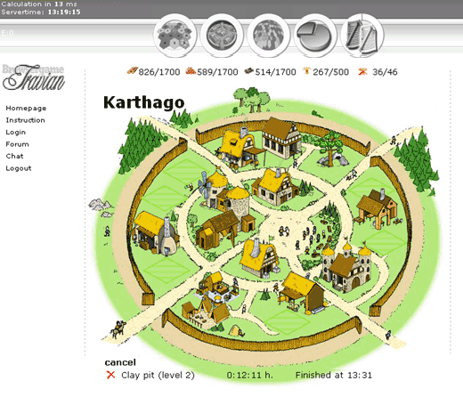

#19485 1 2008-03-12T00:37:29Z Tk_ArtS Browser game roman teutons gauls and the like.
Here are screen shots.

#416070 2 2008-03-12T00:41:50Z epigone The screenie looks neat, some more info and/or a link would be nice.
#416074 4 2008-03-12T00:48:28Z Tk_ArtS Its a free browser game you build up a village using resources.
Its real time with other human beings.
Here is a link I suggest you go to it
http://www.travian.com/#416243 5 2008-03-12T10:29:59Z JeCa I've been playing on Swedish server6 for like a month now, ranked 390 out of 8100 (7000 active players).
Basically, your job is to get as large of a village compared to everyone else. Building takes long time (at 220pop most buildings take 2:30h to build) and resources are also gained at a constant rate that isn't effected by wether you're online or not. Myself I get around 300 units/hour of each resource, but I get about as much from raiding rivaling villages, and you yourself have to be prepared at any time to defend against rivals. It can take up everything from 10minutes to 3hours every day depending on how much direct control you want to have. Spending more time with it doesn't guarantee a better result though, since it's more tactics that matters.